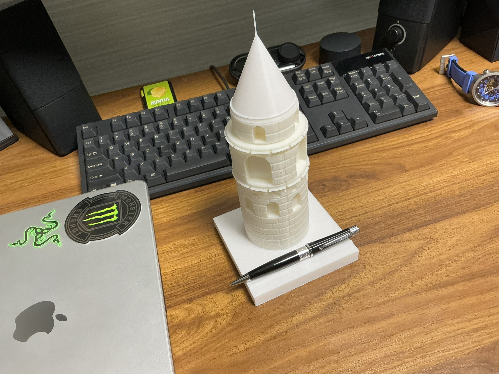
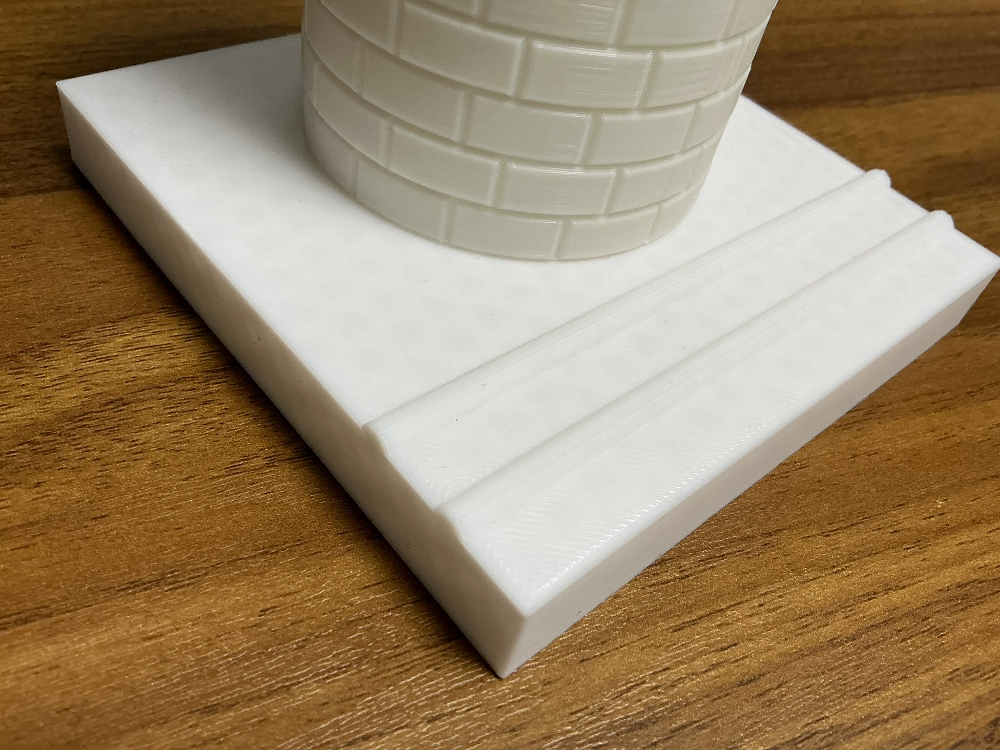

いい感じの塔のペントレー
完成品


この作品について
ちょっとおしゃれなペントレーが欲しくてこの作品を作った。作るにあたってモデルとしたのは、トルコ イスタンブール市にあるガラタ塔(いつか行ってみたい)。
本物は窓の数が多かったり、複雑な箇所も多々あり、完全再現とは行かなかったのが少し心残りだが、綺麗に印刷できてペントレーとしても働いてくれたので自分の中では満足している。
苦労した点、工夫した点
塔だと一目で分かるようにレンガ模様にした。レンガの作り方はネットで調べてそれらを参考にしながら作った。
窓を作る過程は、線分を書いてそれらを押し出してから切り取らなければならなかったので一番時間を要した。
ペントレーとしても機能するように土台部分に半円柱状の棒を2本作り、ペンを支えられるようにした。
ファイル
ファイルA
ファイルB
ファイルC
ファイルD
動画